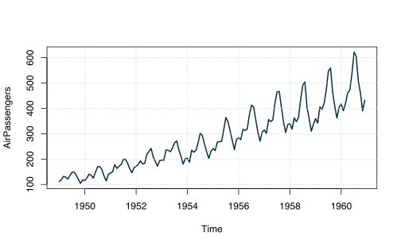
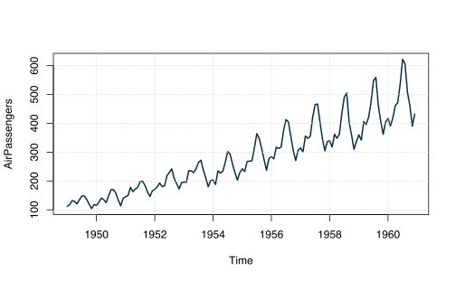
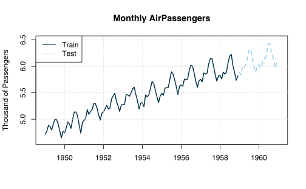
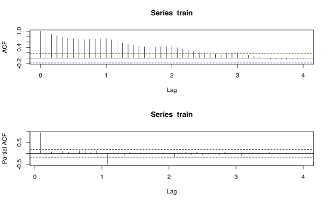
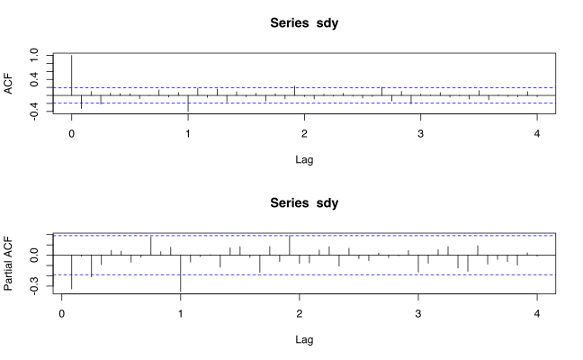
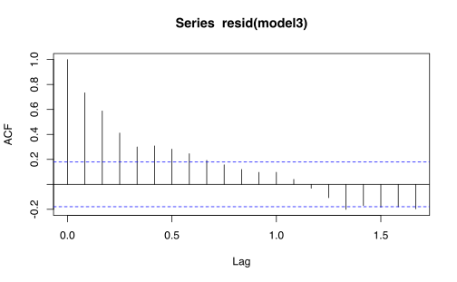
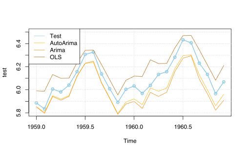

plot(AirPassengers, col = "#023047", lwd = 2)
grid()
Neste post vou explorar um pouco das funções base do R para montar um modelo SARIMA. O R vem “pré-equipado” com um robusto conjunto de funções para lidar com séries de tempo. Inclusive, como se verá, existe uma class específica de objeto para trabalhar com séries de tempo.
Como exemplo, vamos usar a série AirPassengers, uma série bastante famosa usada no livro Time Series Analysis de Box & Jenkins (1976). A série apresenta o volume mensal de passagens aéreas internacionais (em milhares) no período 1949-1960.
plot(AirPassengers, col = "#023047", lwd = 2)
grid()
Uma maneira comum de avaliar a performance preditiva de modelo é usando uma divisão train/test. Essencialmente, removemos uma parte das observações da nossa amostra para que possamos testar a taxa de acerto das previsões do nosso modelo.
Como estamos no contexto de séries de tempo, é natural remover um percetual das observações finais da série. No caso, uso a função window para remover os últimos dois anos da amostra.
y <- log(AirPassengers)
train <- window(y, end = c(1958, 12))
test <- window(y, start = c(1959, 1))
A rigor, seria mais correto experimentar com várias janelas diferentes e talvez fosse interessante também remover um percentual maior de observações. Até onde sei, não é tão fácil implementar esse tipo de cross-validation apenas usando funções base do R, mas um maneira de fazer isso está exposta no livro Forecasting: Principles and Practice.
Aqui a ideia é experimentar com alguns modelos simples. Em especial, o modelo que Box & Jenkins sugerem para a série é de um SARIMA (0, 1, 1)(0, 1, 1)[12] da forma
\[ (1 - \Delta)(1 - \Delta^{12})y_{t} = \varepsilon_{t} + \theta_{1}\varepsilon_{t_1} + \Theta_{1}\varepsilon_{t-12} \]
A metodologia correta para a análise seria primeiro fazer testes de raiz unitária para avaliar a estacionaridade da série. Mas só de olhar para as funções de autocorrelação e autocorrelação parcial, fica claro que há algum componente sazonal e que a série não é estacionária.

Apenas a título de exemplo, faço um teste Dickey-Fuller (ADF), bastante geral, com constante e tendência temporal linear. Para uma boa revisão metodológica de como aplicar testes de raiz unitária, em partiular o teste ADF, consulte o capítulo de séries não-estacionárias do livro Applied Econometric Time Series do Enders
Aqui, a escolha ótima do lag é feita usando o critério BIC (também conhecido como Critério de Schwarz). Não existe uma função que aplica o teste ADF no pacote base o R. A implementação é feita na função ur.df do pacote urca.
A estatísitica de teste mais relevante é a tau3 e vê-se, surpreendentemente, que se rejeita a hipótese nula de raiz unitária. As estatísticas phi2 e phi3 são testes-F da significânica conjunta dos termos de constante e de tendência temporal. As estatísticas de teste são convencionais e seguem a notação do livro do Enders citado acima e também do clássico livro do Hamilton.
library(urca)
adf_test <- ur.df(y, type = "trend", selectlags = "BIC", lags = 13)
summary(adf_test)
###############################################
# Augmented Dickey-Fuller Test Unit Root Test #
###############################################
Test regression trend
Call:
lm(formula = z.diff ~ z.lag.1 + 1 + tt + z.diff.lag)
Residuals:
Min 1Q Median 3Q Max
-0.090139 -0.022382 -0.002417 0.021008 0.110003
Coefficients:
Estimate Std. Error t value Pr(>|t|)
(Intercept) 0.8968049 0.3999031 2.243 0.026859 *
z.lag.1 -0.1809364 0.0842729 -2.147 0.033909 *
tt 0.0016886 0.0008609 1.961 0.052263 .
z.diff.lag1 -0.2588927 0.1134142 -2.283 0.024301 *
z.diff.lag2 -0.0986455 0.1070332 -0.922 0.358665
z.diff.lag3 -0.0379799 0.1045583 -0.363 0.717097
z.diff.lag4 -0.1392651 0.0981271 -1.419 0.158560
z.diff.lag5 -0.0283998 0.0963368 -0.295 0.768686
z.diff.lag6 -0.1326313 0.0889223 -1.492 0.138581
z.diff.lag7 -0.1096365 0.0865862 -1.266 0.208019
z.diff.lag8 -0.2348880 0.0829892 -2.830 0.005497 **
z.diff.lag9 -0.0926604 0.0843594 -1.098 0.274344
z.diff.lag10 -0.2053937 0.0789245 -2.602 0.010487 *
z.diff.lag11 -0.1081091 0.0786801 -1.374 0.172127
z.diff.lag12 0.6633101 0.0752086 8.820 1.54e-14 ***
z.diff.lag13 0.3197783 0.0883636 3.619 0.000443 ***
---
Signif. codes: 0 '***' 0.001 '**' 0.01 '*' 0.05 '.' 0.1 ' ' 1
Residual standard error: 0.04011 on 114 degrees of freedom
Multiple R-squared: 0.8781, Adjusted R-squared: 0.8621
F-statistic: 54.75 on 15 and 114 DF, p-value: < 2.2e-16
Value of test-statistic is: -2.147 4.9781 3.4342
Critical values for test statistics:
1pct 5pct 10pct
tau3 -3.99 -3.43 -3.13
phi2 6.22 4.75 4.07
phi3 8.43 6.49 5.47Pela análise do correlograma do resíduo da regressão, fica claro que ainda há autocorrelação. Novamente, o mais correto seria aplicar o teste Ljung-Box sobre os resíduos para verificar a presença de autocorrelação conjunta nas primeiras k defasagens, mas este não é o foco deste post. Esta pequena digressão exemplifica como a aplicação destes testes em séries de tempo pode não ser tão direto/simples.

Os gráficos abaixo mostram o correlograma da série após tirarmos a primeira diferença e a primeira diferença sazonal. A partir da análise destes correlogramas poderíamos inferir algumas especificações alternativas para modelos SARIMA e aí, poderíamos escolher o melhor modelo usando algum critério de informação.
A metodologia Box & Jenkins de análise de séries de tempo tem, certamente, um pouco de arte e feeling. Não é tão imediato entender como devemos proceder e, na prática, faz sentido experimentar com vários modelos alternativos de ordem baixa como SARIMA(1, 1, 1)(0, 1, 1), SARIMA(2, 1, 0)(0, 1, 1), etc.

Para não perder muito tempo experimentando com vários modelos vou me ater a três modelos diferentes. Uma função bastante útil é a auto.arima do pacote forecast que faz a seleção automática do melhor modelo da classe SARIMA/ARIMA/ARMA.
Eu sei que o Schumway/Stoffer, autores do ótimo Time Series Analysis and Its Applications, tem um post crítico ao uso do auto.arima. Ainda assim, acho que a função tem seu mérito e costuma ser um bom ponto de partida para a sua análise. Quando temos poucas séries de tempo para analisar, podemos nos dar ao luxo de fazer a modelagem manualmente, mas quando há centenas de séries, é muito conveniente poder contar com o auto.arima.
Como o auto.arima escolhe o mesmo modelo do Box & Jenkins eu experimento com uma especificação diferente. Novamente, a título de exemplo eu comparo ambos os modelos SARIMA com uma regressão linear simples que considera uma tendência temporal linear e uma série de dummies sazonais. O modelo é algo da forma
\[ y_{t} = \alpha_{0} + \alpha_{1}t + \sum_{i = 1}^{11}\beta_{i}s_{i} + \varepsilon_{t} \]
Onde \(s_{i}\) é uma variável indicadora igual a 1 se \(t\) corresponder ao mês \(i\) e igual a 0 caso contrário. Vale notar que não podemos ter uma dummy para todos os meses se não teríamos uma matriz de regressores com colinearidade perfeita!
Aqui vou contradizer um pouco o espírito do post novamente para usar o forecast. O ganho de conveniência vem na hora de fazer as previsões. Ainda assim, indico como estimar os mesmos modelos usando apenas funções base do R.
# Usando o forecast
library(forecast)
model1 <- auto.arima(train)
model2 <- Arima(train, order = c(1, 1, 1), seasonal = c(1, 1, 0))
model3 <- tslm(train ~ trend + season)# Usando apenas funções base
model2 <- arima(
trains,
order = c(1, 1, 1),
seasonal = list(order = c(1, 1, 1), period = 12)
)
# Extrai uma tendência temporal linear
trend <- time(train)
# Cria variáveis dummies mensais
season <- cycle(train)
model3 <- lm(train ~ trend + season)A saída dos modelos segue abaixo. As saídas dos modelos SARIMA não são muito interessantes. Em geral, não é muito comum avaliar nem a significância e nem o sinal dos coeficientes, já que eles não têm muito valor interpretativo. Uma coisa que fica evidente dos dois modelos abaixo é que o primeiro parece melhor ajustado aos dados pois tem valores menores em todos os critérios de informação considerados.
model1Series: train
ARIMA(0,1,1)(0,1,1)[12]
Coefficients:
ma1 sma1
-0.3424 -0.5405
s.e. 0.1009 0.0877
sigma^2 = 0.001432: log likelihood = 197.51
AIC=-389.02 AICc=-388.78 BIC=-381model2Series: train
ARIMA(1,1,1)(1,1,0)[12]
Coefficients:
ar1 ma1 sar1
0.0668 -0.4518 -0.4426
s.e. 0.3046 0.2825 0.0875
sigma^2 = 0.001532: log likelihood = 195.14
AIC=-382.28 AICc=-381.89 BIC=-371.59Já o modelo de regressão linear tem uma saída mais interessante. Note que, por padrão, o primeiro mês foi omitido e seu efeito aparece no termo constante. Na tabela abaixo, vemos que há um efeito positivo e significativo, por exemplo, nos meses 6-8 (junho a agosto), que coincidem com o período de férias de verão no hemisfério norte. Já, em novembro (mês 11) parece haver uma queda na demanda por passagens aéreas.
Note que o R quadrado da regressão é extremamente elevado e isso é um indício de que algo está errado. Isto, muito provavelmente é resultado da não-estacionaridade da série.
broom::tidy(model3)# A tibble: 13 × 5
term estimate std.error statistic p.value
<chr> <dbl> <dbl> <dbl> <dbl>
1 (Intercept) 4.71 0.0191 247. 2.81e-149
2 trend 0.0106 0.000145 73.2 3.09e- 93
3 season2 -0.0134 0.0245 -0.549 5.84e- 1
4 season3 0.120 0.0245 4.91 3.32e- 6
5 season4 0.0771 0.0245 3.15 2.14e- 3
6 season5 0.0675 0.0245 2.75 6.93e- 3
7 season6 0.191 0.0245 7.81 4.23e- 12
8 season7 0.288 0.0245 11.7 6.32e- 21
9 season8 0.278 0.0245 11.4 4.36e- 20
10 season9 0.143 0.0245 5.82 6.13e- 8
11 season10 0.00108 0.0245 0.0441 9.65e- 1
12 season11 -0.141 0.0245 -5.77 7.97e- 8
13 season12 -0.0248 0.0245 -1.01 3.14e- 1De fato, olhando para a função de autocorrelação do resíduo do modelo de regressão linear, fica evidente que há autocorrelação. Uma forma de contornar isso seria de incluir um termo ARMA no termo de erro. Novamente, este não é o foco do post e vamos seguir normalmente.
acf(resid(model3))
A maneira mais prática de trabalhar com vários modelos ao mesmo tempo é agregando eles em listas e aplicando funções nessas listas.
Abaixo eu aplico a função forecast para gerar as previsões 24 períodos a frente nos três modelos. Depois, eu extraio somente a estimativa pontual de cada previsão.
models <- list(model1, model2, model3)
yhat <- lapply(models, forecast, h = 24)
yhat_mean <- lapply(yhat, function(x) x$mean)Comparamos a performance de modelos de duas formas: (1) olhando para medidas de erro (o quão bem o modelo prevê os dados do test) e (2) olhando para critérios de informação (o quão bem o modelo se ajusta aos dados do train).
Os critérios de informação têm todos uma interpretação bastante simples: quanto menor, melhor. Tipicamente, o AIC tende a escolher modelos sobreparametrizados enquanto o BIC tende a escolher modelos mais parcimoniosos.
Já a comparação de medidas de erro não é tão simples. Pois ainda que um modelo tenha, por exemplo, um erro médio quadrático menor do que outro, não é claro se esta diferença é significante. Uma maneira de testar isso é via o teste Diebold-Mariano, que compara os erros de previsão de dois modelos. Implicitamente, contudo, ele assume que a diferença entre os erros de previsão é covariância-estacionária (também conhecido como estacionário de segunda ordem ou fracamente estacionário). Dependendo do contexto, esta pode ser uma hipótese mais ou menos razoável.
compute_error <- function(model, test) {
y <- test
yhat <- model$mean
train <- model$x
# Calcula o erro de previsao
y - yhat
}
compute_error_metrics <- function(model, test) {
y <- test
yhat <- model$mean
train <- model$x
# Calcula o erro de previsao
error <- y - yhat
# Raiz do erro quadrado medio
rmse <- sqrt(mean(error^2))
# Erro medio absoluto
mae <- mean(abs(error))
# Erro medio percentual
mape <- mean(abs(100 * error / y))
# Root mean squared scaled error
rmsse <- sqrt(mean(error^2 / snaive(train)$mean))
# Devolve os resultados num list
list(rmse = rmse, mae = mae, mape = mape, rmsse = rmsse)
}
compute_ics <- function(model) {
# Extrai criterios de informacao
aic <- AIC(model)
bic <- BIC(model)
# Devolve os resultados num list
list(aic = aic, bic = bic)
}
fcomparison <- lapply(yhat, function(yhat) compute_error_metrics(yhat, test))
icc <- lapply(models, compute_ics)
comp_error <- do.call(rbind.data.frame, fcomparison)
rownames(comp_error) <- c("AutoArima", "Manual SARIMA", "OLS")
comp_ics <- do.call(rbind.data.frame, icc)
rownames(comp_ics) <- c("AutoArima", "Manual SARIMA", "OLS")A tabela abaixo mostra os critérios AIC e BIC para os três modelos. Em ambos os casos, o SARIMA(0, 1, 1)(0, 1, 1)[12] parece ser o escolhido. Este tipo de feliz coincidência não costuma acontecer frequentemente na prática, mas neste caso ambos os critérios apontam para o mesmo modelo.
comp_ics aic bic
AutoArima -389.0155 -380.9970
Manual SARIMA -382.2807 -371.5894
OLS -342.2930 -303.2681Na comparação de medidas de erro, o SARIMA(0, 1, 1)(0, 1, 1)[12] realmente tem uma melhor performance, seguido pelo OLS e pelo SARIMA(1, 1, 1)(1, 1, 0)[12].
comp_error rmse mae mape rmsse
AutoArima 0.09593236 0.08959921 1.463477 0.03939512
Manual SARIMA 0.11688549 0.10780460 1.762201 0.04806577
OLS 0.10333715 0.09384411 1.549261 0.04266214Será que esta diferença é significante? Vamos comparar os modelos SARIMA. Pelo teste DM ela é sim. Lembre-se que o teste DM é, essencialmente, um teste Z de que \(e_{1} - e_{2} = 0\) ou \(e_{1} = e_{2}\), onde os valores são a média dos erros de previsão dos modelos.
errors <- lapply(yhat, function(yhat) compute_error(yhat, test))
e1 <- errors[[1]]
e2 <- errors[[2]]
dm.test(e1, e2, power = 2)
Diebold-Mariano Test
data: e1e2
DM = -4.4826, Forecast horizon = 1, Loss function power = 2, p-value =
0.0001691
alternative hypothesis: two.sidedVale notar que o teste DM serve para comparar os erros de previsão de quaisquer modelos. Como o teste não faz qualquer hipótese sobre “de onde vem” os erros de previsão, ele pode ser utilizado livremente. Vale lembrar também que este teste não deve ser utilizado para escolher o melhor modelo, já que ele compara apenas a capacidade preditiva de dois modelos alternativos.
Outro ponto, também complicado, é de qual a medida de erro que se deve escolher. O teste DM implicitamente usa o erro médio quadrático, mas há várias outras alternativas. Uma breve discussão pode ser vista aqui.
Por fim, o gráfico abaixo mostra as previsões dos modelos alternativos contra a série real.
plot(test, ylim = c(5.8, 6.5), col = "#8ecae6", lwd = 2, type = "o")
lines(yhat_mean[[1]], col = "#ffb703")
lines(yhat_mean[[2]], col = "#fb8500")
lines(yhat_mean[[3]], col = "#B86200")
grid()
legend("topleft", lty = 1,
legend = c("Test", "AutoArima", "Arima", "OLS"),
col = c("#8ecae6", "#ffb703", "#fb8500", "#B86200"))
Algumas conclusões gerais para amarrar este post:
A metodologia Box-Jenkins não é tão direta. A interpretação do correlograma é muitas vezes incerta e a melhor opção costuma ser testar vários modelos.
Escolher o melhor modelo não é tão trivial. Uma saída simples é escolher o modelo com menor AIC ou BIC. Ainda assim, é importante levar em conta a capacidade preditiva do modelo.
Mesmo usando apenas funções base do R já é possível fazer boas análises com séries de tempo.